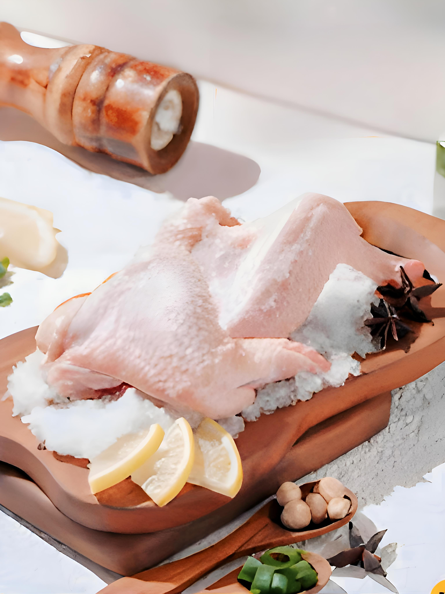

Berita Terkini
Jelajahi Dunia Ayam: Blog PT. TRI TERUS JAYA MAKMUR
Temukan informasi terkini, tips, dan inspirasi seputar pengolahan ayam segar, serta berbagai resep lezat untuk menyempurnakan hidangan Anda.

09 September 2024
Sayap Ayam: Favorit Gurih dengan Beragam Variasi Olahan
Apa Itu Sayap Ayam?
Sayap ayam adalah bagian yang terdiri dari daging, kulit, dan sedikit tulang, membuatnya ideal untuk berbagai olahan seperti gorengan, panggangan, hingga masakan pedas. Sayap memiliki kombinasi sempurna antara tekstur garing dari kulit dan daging empuk, menjadikannya favorit di berbagai masakan internasional.
Manfaat Sayap Ayam untuk Kesehatan
1. Sumber Protein
Keunggulan Sayap Ayam dalam Masakan
1. Gurih dan Garing
Tips Memasak Sayap Ayam agar Sempurna
1. Gunakan Teknik Double Frying: Goreng dua kali untuk hasil lebih renyah.
2. Marinasi dengan Bumbu: Diamkan sayap dengan bumbu minimal 30 menit agar rasa meresap.
3. Panggang dengan Api Sedang: Pastikan sayap matang merata dan kulitnya tidak hangus.
Contoh Resep: Sayap Ayam Crispy Pedas Manis
Bahan:
Cara Membuat:
1. Balur sayap ayam dengan tepung maizena, garam, dan lada.2. Goreng sayap hingga kuning kecokelatan dan renyah.
3. Tumis bawang putih hingga harum, lalu tambahkan kecap, saus sambal, dan madu.
4. Masukkan sayap goreng ke dalam saus, aduk hingga rata.
5. Sajikan hangat dengan taburan wijen atau daun bawang.
Kesimpulan:
Sayap Ayam, Olahan Serbaguna untuk Setiap Kesempatan.
Sayap ayam bukan hanya enak, tetapi juga fleksibel untuk berbagai resep. Cocok disajikan sebagai camilan, lauk, atau menu pesta, sayap ayam menawarkan rasa gurih dan tekstur sempurna yang sulit ditolak. Dengan bumbu yang tepat, Anda bisa menghadirkan hidangan spesial yang memuaskan selera seluruh keluarga. Kembali